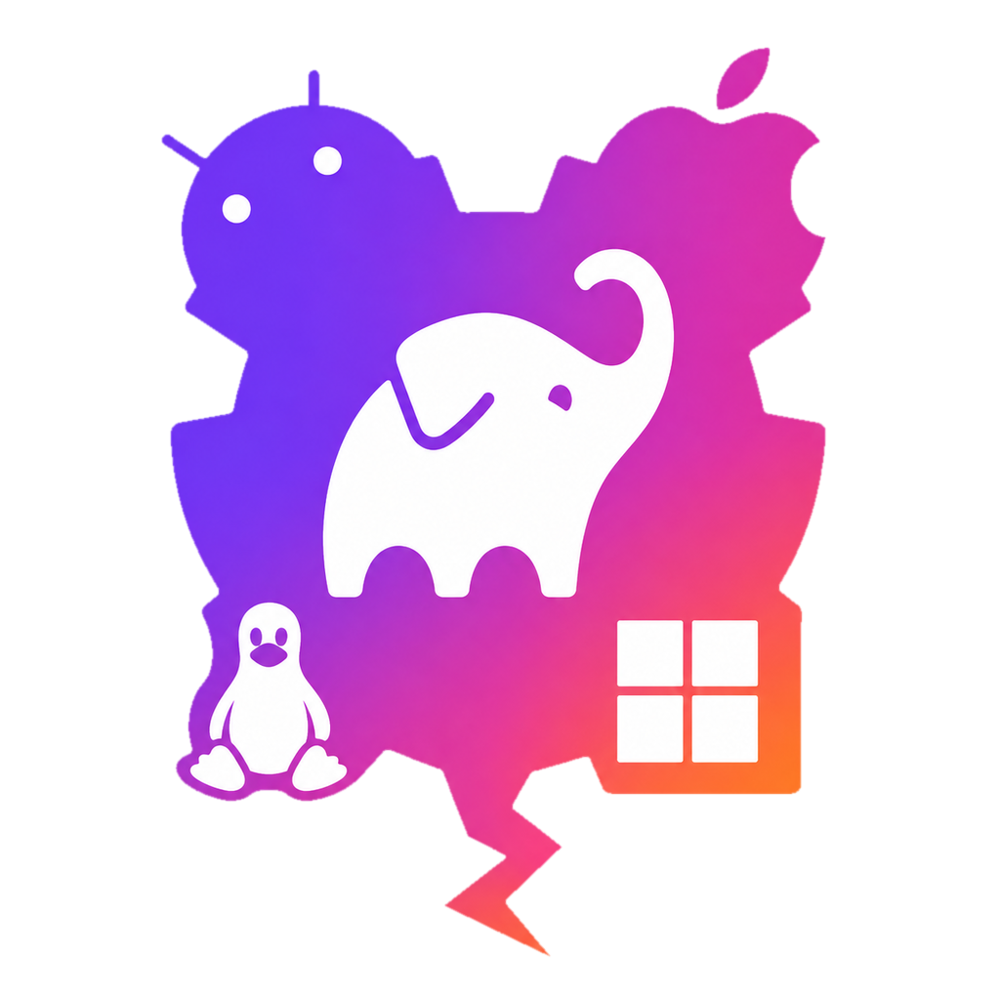

KiteConfigOne block. Every platform.
App name, id, version, icons and build config for Kotlin Multiplatform apps.
build.gradle.kts
kiteConfig { appName = "Jetzy" appId = "com.example.jetzy" version = "1.4.0" autoApply = true logo { foreground = file("jet.png") } }
Android
Jetzy1.4.0
iOS
Jetzy1.4.0
Desktop
Jetzy1.4.0